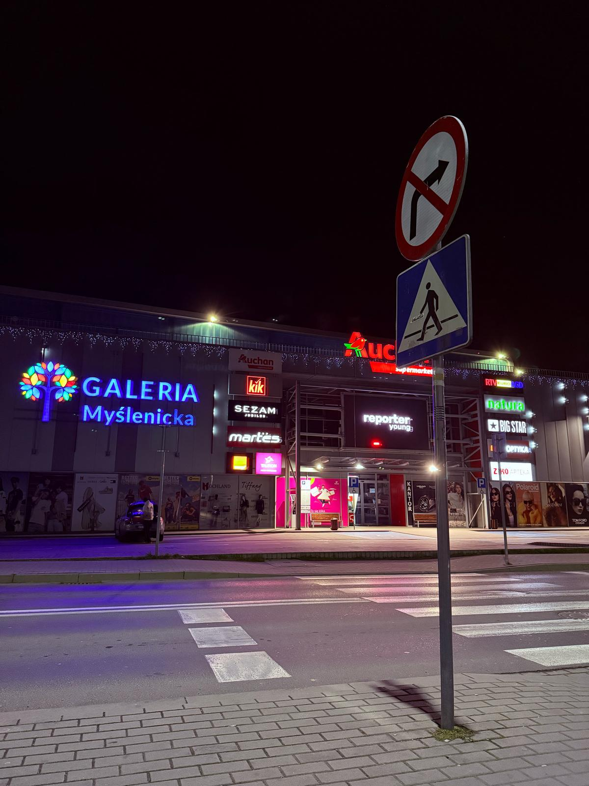

Galeria Myślenicka to centrum handlowe, które znajduje się w Myślenicach, w Małopolsce. Została otwarta w listopadzie 2015 roku i jest największym centrum handlowym w powiecie myślenickim. Galeria oferuje mnóstwo sklepów, punktów usługowych i miejsc, gdzie można coś zjeść.
W Galerii Myślenickiej znajduje się około 40 sklepów. Można tu znaleźć znane sieci, jak np. Intermarché, które jest dużym supermarketem, RTV Euro AGD, gdzie kupimy elektronikę, czy CCC, sklep obuwniczy. Oprócz tego są też sklepy takie jak KIK, oferujące odzież, obuwie, artykuły wyposażenia domu oraz zabawki.
Centrum handlowe jest dobrze skomunikowane, bo znajduje się blisko drogi ekspresowej S7 (Zakopianka), co sprawia, że łatwo tam dojechać zarówno z Myślenic, jak i z okolicznych miejscowości. Dla osób, które przyjeżdżają samochodami, przygotowano 230 miejsc parkingowych.
Galeria Myślenicka ma też dogodną lokalizację, bo jest oddalona tylko o 600 metrów od rynku w Myślenicach. Jeśli chcesz się tam wybrać, to w godzinach 9:00–16:00 możesz skontaktować się z sekretariatem, ale w weekendy jest on zamknięty.
Podsumowując, Galeria Myślenicka to miejsce, które oferuje szeroką gamę sklepów i usług, co sprawia, że jest świetnym miejscem na zakupy czy spędzenie czasu z rodziną i przyjaciółmi.

Powrót do strony głównej...